ALS Auto


40 KM
Specijalne gume iz tvrtke Continental sa do 30% manjim otporom kotrljanja znače značajno povećanje dosega električnih automobila
100KM
Punjač baterija jedan je od važnih dijelova električnog automobila. O njemu ovisi vrijeme punjenja baterija. Tako se punjači razlikuju po snazi. Ovaj punjač to čini puno brže i električni automobil napune za 20 - 30 minuta. Punjač se može ugraditi u auto, ali i ne mora.

150KM
Električna pumpa za rashladnu tekućinu- za pouzdanu i učinkovitu podršku različitih krugova rashladne tekućin.Koriste se za različita područja primjene, za podršku krugovima grijanja, kao i pri start/stop vožnji i za hlađenje komponenata kao što su turbokompresori ili punjači zraka punjenja.
15KM
LED Retrofit svjetlo-elegantno, moderno i ekološki prihvatljivo Bosch LED Retrofit svjetlo, kao halogeno svjetlo brzo se ugrađuje i pruža stilski izgled unutar vozila.
40 KM
Za vrhunsku kvalitetu zraka unutar vozila i poboljšanu zaštitu zdravlja vozača i suvozača: Bosch filter uklanjaju sitne čestice prašine i sadrže dodatni antialergijski sloj koji odvaja štetne alergene.
100KM
Kočiona tekućina DOT 5.1 je novi tip DOT 4 kočione tekućine. Ima mnogo višu temperaturu ključanja u suhom i mokrom stanju. Time se postiže dodatna zaštita od stvaranja mjehurića pare u kočionoj tekućini pri visokim temperaturama kočnice, koji mogu rezultovati otkazivanjem kočnice.

150KM
Električni grijač dizajniran za automobile na električni pogon. Sistem se sastoji od grijača, koji je postavljen na postojeći sistem vodenog hlađenja vozila, i upravljačke elektronike, koja brine o uključivanju i kontroli grijača.
15KM
Ventilator za hlađenje motora- osiguranje pouzdanog strujanja zraka preko hladnjaka, kako bi se sprječilo pregrijavanje motora, čak pri malim brojevima okretaja. Ovi ventilatori za hlađenje motora razvijeni su i proizvedeni od kvalitetnih materijala i tačno prilagođeni vozilu kako bi se smanjili šumovi tokom rada.
Audi E-tron
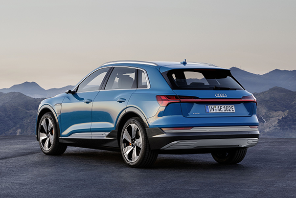
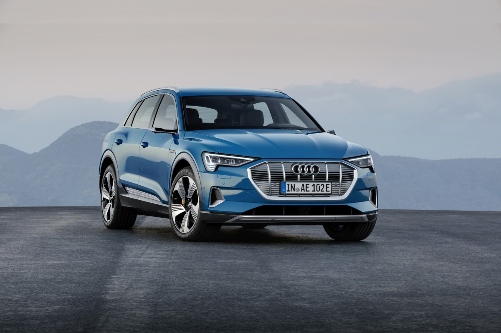
Snaga od 265 kW odnosi se na najveću električnu snagu (60 sekundi). Prednji elektromotor,smješten je paralelno u odnosu na osovine u svrhu postizanja optimalnog paketa opreme i ostvaruje najveću snagu od 125 kW pri okretnom momentu od 247 Nm. Na raspolaganju vam stoji ukupno dvanaest nijansi, između ostalog i ekskluzivna Antigua plava boja. Ne osiguravamo samo uobičajenu kvalitetu jednog od naših vozila već prije svega garantujemo vašu sigurnost.
Cijena: 105.000KM
Tesla model Y
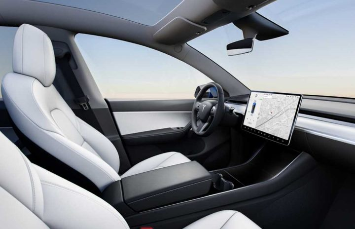
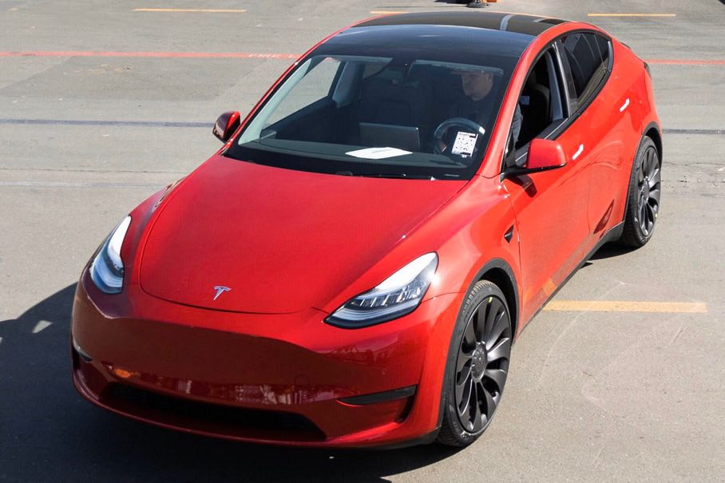
Pored automobila Tesla model Y imamo još u ponudi tri automobila proizvođača Tesla: Model S, Model X i Model 3. Tesla Model Y je dovoljno prostran da poveze sedam putnika i njihovu prtljagu, nudeći ubjedljivo najveći domet, superiorne performanse i najnapredniju tehnologiju. U unutrašnjosti dominira dobro poznati 15-inčni zaslon osjetljiv na dodir koji kontrolira gotovo sve što automobil može ponuditi, uključujući opcijski autopilot. Model Y ima prednja i stražnja konvencionalna vrata.
Cijena: 75.000KM
E-Golf VII
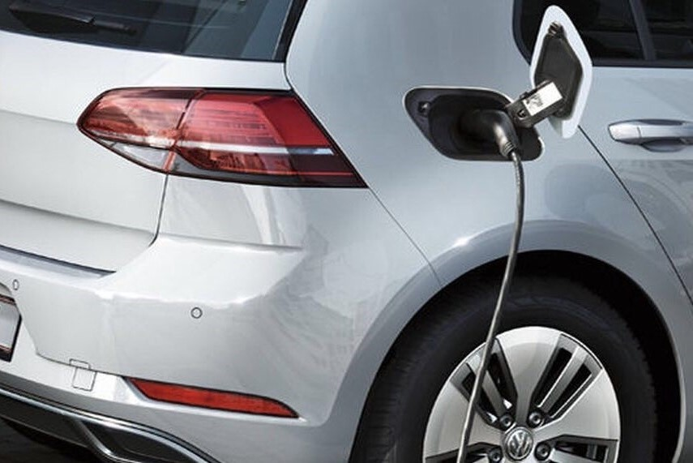
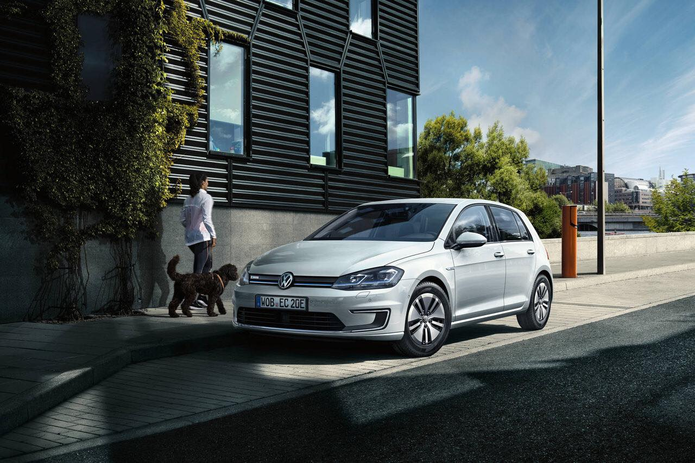
Isključivo električni pogon predstavlja optimalno rješenje za mobilnost prije svega na kratkim dionicama, npr. u gradovima. S novim e-Golfom možete napustiti i grad. Kombinirani domet iznosi do 231 km. Vaš e-Golf udovoljava zahtjevima vremena: snažni, gotovo nečujni elektromotor garantuje impozantno ubrzanje i istovremeno omogućuje način vožnje kojim se ostvaruje ušteda goriva a inteligentni menadžment punjenja čini punjenje vašeg e-Golfa jednostavnijim.
Cijena: 70.000KM
MAZDA CX-30
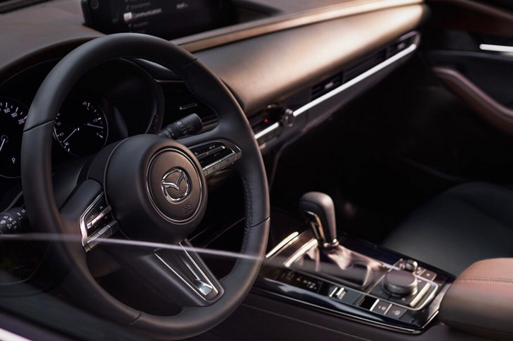
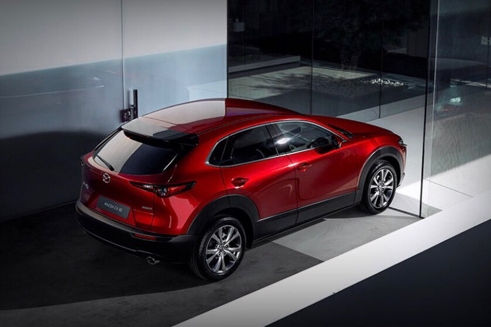
Potpuno nova Mazda CX-30 je lijepa kako spolja tako i iznutra, od protočnih linija karoserije do prefinjene izrade unutrašnjosti i inovativne tehnologije ispod karoserije. Sve se međusobno nadopunjuje i tako poboljšava vaš stil života i svako vaše putovanje čini posebnim.
Svi motori izrađeni najnovijom tehnologijom Skyactiv opremljeni su električnom pogonskom tehnologijom Mazda M Hibrid, čime je smanjena potrošnja goriva bez uticaja na snagu motora.
Cijena: 30.000KM
Nissan LEAF
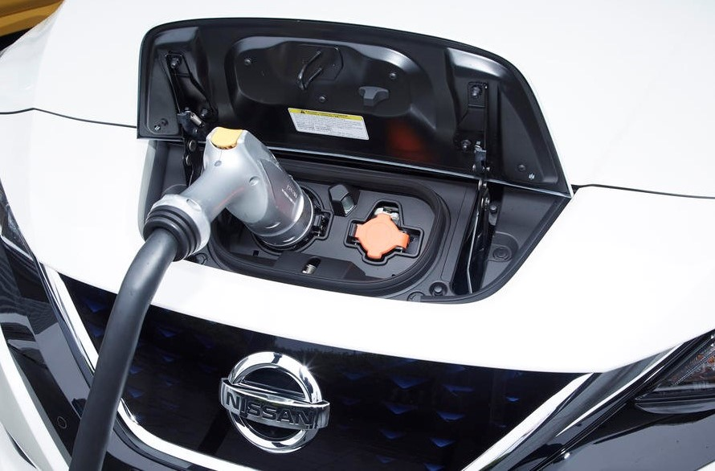
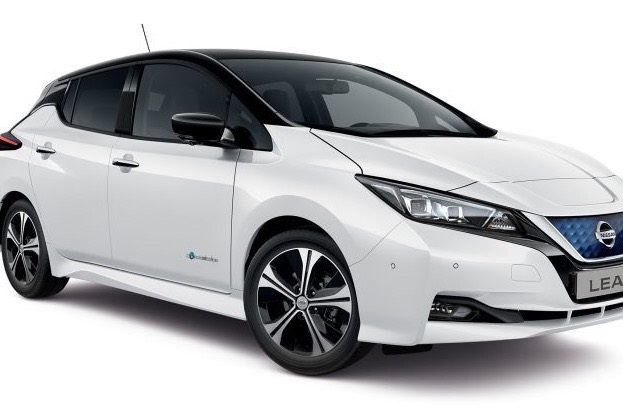
Najprodavanije električno vozilo u Europi donosi iskustvo od 150 KS bez emisija. Sve modeli Nissana LEAF isporučuju se s kablom za punjenje na kućnoj utičnici pomoću kojeg ćete automobil napuniti dok spavate ili dok ste na poslu. Nudi fantastično zabavnu vožnju bez kompromisa svakodnevnoj gradskoj vožnji kojom vlada papučica e-Pedal™, a tehnologija ProPILOT olakšava prometne gužve. Dostupan je u dva modela koja odgovaraju različitim stilovima života - Nissan LEAF 40 kWh i Nissan LEAF e+ 62 kWh.
Cijena: 25.000KM
CITIGOe iV
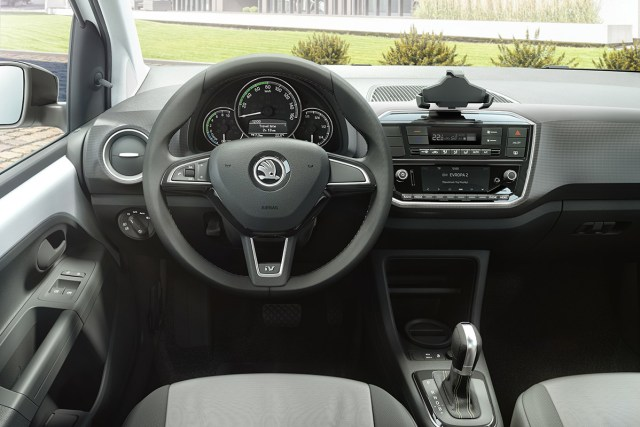
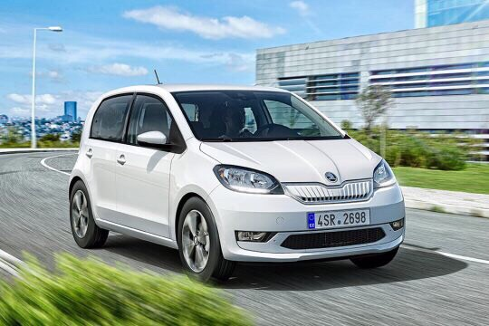
CITIGOe iV prvi je Škodin električni automobil, a nudimo ga po izvrsnoj cijeni. Opremljena elektromotorom snage 61 kW, te nudi vožnju bez emisija ispušnih plinova sa mnogo užitka u vožnji zahvaljujući maksimalnom okretnom momentu od 212 Nm.. Sa sadržajem energije od 36,8 kWh, od čega je moguće iskoristiti 32,3 kWh neto, litij-ionska baterija omogućuje stvaran doseg od čak 260 kilometara, čime se mogu zadovoljiti zahtjevi u gradskom okruženju.
Cijena: 18.000KM
Zetta
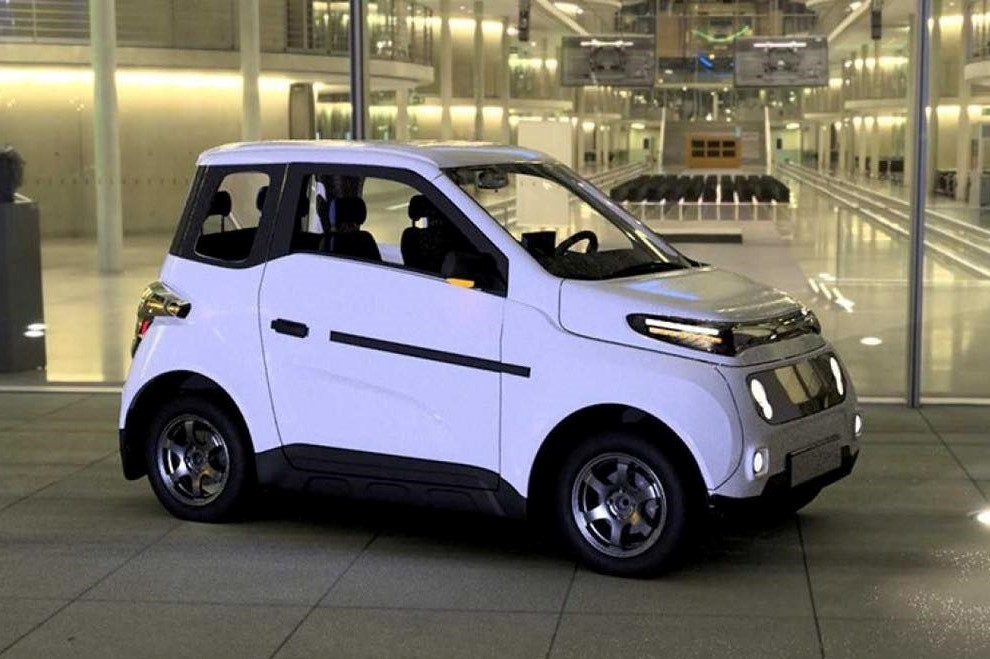
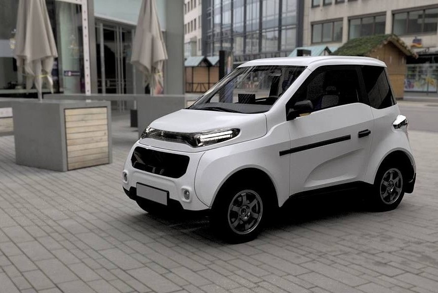
Šasiju čini metalna konstrukcija sa panelima od ekstruzivnog kompozitnog materijala. Pogonski sistem čine indukcijski motori koji snagu prenose na točkove. Zetta će s jednim punjenjem moći preći od 300 do 560 kilometara u zavisnosti od opreme. Predviđeno je nekoliko kompleta baterija, koji se razlikuju po kapacitetu i tipu pogona (na dva ili četiri točka). Ono što nedostaje trenutnom tržištu su jeftiniji automobili na struju. Promjenu i osvježenje unijela je Zetta sa izuzetno povoljnom cijenom.
Cijena: 12.000KM
Great Wall Motor
Ora R1
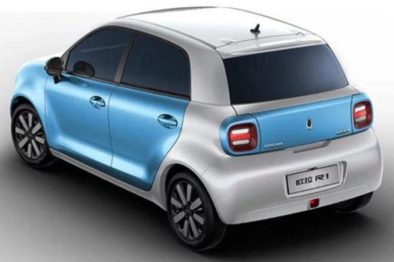
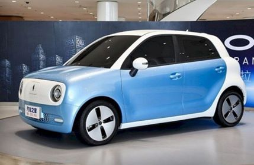
Ora R1 je električni mini četvorosjed koji ima domet 350 km. Ora znači „pouzdano“, „alternativno“, a mi se nadamo da će se kompaktne dimenzije i pristupačna cijena dopasti kupcima. Ora je dostupna u pet boja: titan bijela, kadet plava, nebo plava, kombinacija titan bijele i svjetlucavo crne, i kombinacija kadet plava i titan bijela.
Cijena: 9.900KM
Dizajnirala: Omerović Lejla, 2023.god.